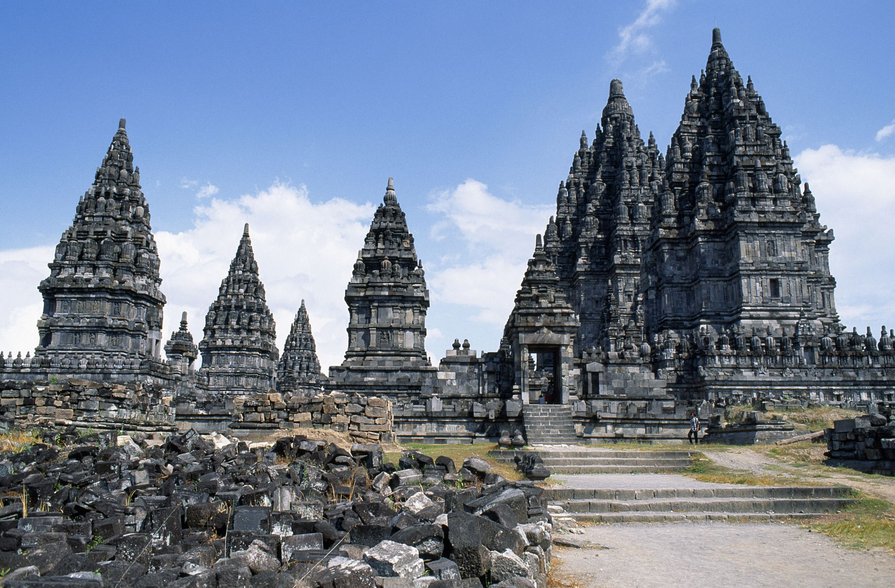

Majapahit empire 13-14th centuries
1.The most recent and most succesful empire of Indonesia and maybe all of Southeast Asia was the Majaphit empire.
3. It was in eastern Java and it lasted in between the 13th and 14th centuries
4. In 1292 Mongol soldiers came to Java to arrange an insult to be made to Kublai Khan as an excuse to invade.
5. The empire was very powerful and had realtions with China,Siam,and Champa.
